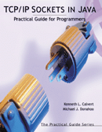

Practical TCP/IP Sockets in Java
TM

Welcome to the web resource for TCP/IP Sockets in Java: Practical Guide for Programmers.
Example code from text
Sample programming exercises
Powerpoint Slides - DRAFT!!!!!
(Currently only covers Chpts. 1-2)
The Perils of Closing a Socket with a Non-Empty RecvQ
TCP/IP Sockets in C: Practical Guide for Programmers
Practical Series